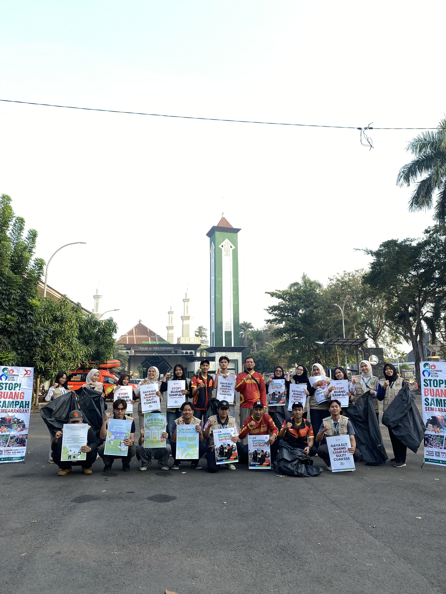

Bukan Sekadar Aksi: Kolaborasi KKN dan Karawang Peduli Menyuarakan Cinta Lingkungan

KKN Universitas Nusa Bangsa Sukses Luncurkan Program Pertanian Organik di Desa Maju Jaya
Aksi kolaboratif KKN Karangpawitan 2026 bersama Karawang Peduli mengajak masyarakat menjaga lingkungan melalui orasi edukatif dan kegiatan pungut sampah.